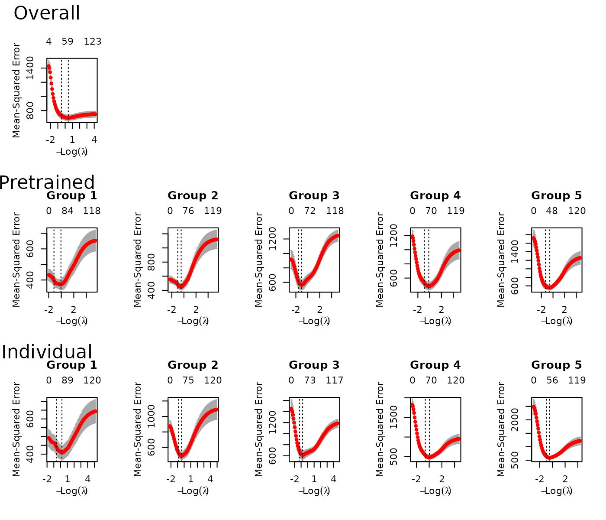

ptLasso Vignette and Manual
ptLasso.RmdIntroduction to pretraining
Suppose we have a dataset spanning ten cancers and we want to fit a lasso penalized Cox model to predict survival time. Some of the cancer classes in our dataset are large (e.g. breast, lung) and some are small (e.g. head and neck). There are two obvious approaches: (1) fit a “pancancer model” to the entire training set and use it to make predictions for all cancer classes and (2) fit a separate (class specific) model for each cancer and use it to make predictions for that class only.
Pretraining (Craig et al. (2024)) is a
method that bridges these two options; it has a parameter that allows
you to fit the pancancer model, the class specific models, and
everything in between. ptLasso is a package that fits
pretrained models using the glmnet package (Friedman, Tibshirani, and Hastie (2010)),
including lasso, elasticnet and ridge models.
Our example dataset consisting of ten different cancers is called
input grouped. There is a grouping on the rows of
and each row belongs to one of the cancer classes. We want to fit a
specific model for each of the ten cancers, but we also want to share
information across all cancers. Importantly, pretraining is a general
method to pass information from one model to another – it has many uses
beyond what has already been discussed here, including time series data,
multi-response data and conditional average treatment effect estimation.
Some of these modeling tasks are not supported by the
ptLasso package, and the final section in this vignette
shows how to do pretraining for them using the glmnet
package. The remainder of this introduction describes the input grouped
setting.
Before we describe pretraining in more detail, we will first give a quick review of the lasso.
Review of the lasso
For the Gaussian family with data
,
the lasso has the form $$\begin{equation}
{\rm argmin}_{\beta_0, \beta} \frac{1}{2} \sum_{i=1}^n(y_i- \beta_0
-\sum_{j=1}^p x_{ij}\beta_j)^2 + \lambda \sum_{j=1}^p |\beta_j |.
\end{equation}$$ Varying the regularization parameter
yields a path of solutions: an optimal value
is usually chosen by cross-validation, using for example the
cv.glmnet function from the package
glmnet.
In GLMs and -regularized GLMs, one can include an offset: a pre-specified -vector that is included as an additional column to the feature matrix, but whose weight is fixed at 1. Secondly, one can generalize the norm to a weighted norm, taking the form $$\begin{equation} \sum_j {\rm pf}_j |\beta_j | \end{equation}$$ where each ${\rm pf}_j \ge 0$ is a penalty factor for feature . At the extremes, a penalty factor of zero implies no penalty and means that the feature will always be included in the model; a penalty factor of leads to that feature being discarded (i.e., never entered into the model).
Details of pretraining
For the input grouped setting, pretraining model fitting happens in two steps. First, train a model using the full data: where:
- are the observations in group ,
- is the group specific intercept for group (by convention, ),
- are the overall intercept and coefficients,
- and is a parameter that has been chosen (perhaps the value minimizing the CV error).
Define to be the support set (the nonzero coefficients) of .
Then, for each group , fit an individual model: find and such that $$\begin{eqnarray} && \hat{\mu}_k, \hat{\beta}_k = \arg \min_{\mu_k, \beta_k} \frac{1}{2} \| y_k - (1-\alpha) \left(\hat{\mu}_0 \mathbf{1} + \hat{\theta}_k \mathbf{1} + X_k \hat{\beta}_0\right) - (\mu_k \mathbf{1} + X_k \beta_k) \|_2^2 + \cr && \phantom{\hat{\mu}_k, \hat{\beta}_k} \lambda_2 \sum_{j=1}^p \Bigl[ I(j \in S(\hat{\beta}_0))+ \frac{1}{\alpha} I(j \notin S(\hat{\beta}_0)) \Bigr] |\beta_{kj}|, \label{eq:model} \end{eqnarray}$$ where and are hyperparameters that may be chosen through cross validation.
This is a lasso linear regression model with two additional components: offset , and penalty factor for coefficient which is 1 if and otherwise.
Notice that when , this returns the overall model fine tuned for each group: this second stage model is only allowed to fit the residual , and the penalty factor only allows the use of if it was already selected by the overall model.
At the other extreme, when , this is equivalent to fitting a separate model for each class. There is no offset, and the lasso penalty is 1 for all features (the usual lasso penalty).
ptLasso under the hood
All model fitting in ptLasso is done with
cv.glmnet. The first step of pretraining is a
straightforward call to cv.glmnet; the second step is done
by calling cv.glmnet with:
-
offsetand -
penalty.factor, the entry of which is if and otherwise.
Because ptLasso uses cv.glmnet, it inherits
most of the virtues of the glmnet package: for example, it
handles sparse input-matrix formats, as well as range constraints on
coefficients.
Additionally, one call to ptLasso fits an overall model,
pretrained class specific models, and class specific models for each
group (without pretraining). The ptLasso package also
includes methods for prediction and plotting, and a function that
performs K-fold cross-validation.
Quick start
ptLasso uses the same syntax as glmnet
For those familiar with glmnet, ptLasso has
a similar structure: ptLasso has functions to train, plot
and predict, and it follows the syntax of glmnet.
Additionally, ptLasso has a parameter
that is analogous to the elasticnet parameter also called
.
To avoid confusion, we will refer to the elasticnet parameter as
.
As with
in glmnet, you must specify the value of
that you want to use when calling ptLasso; the default is
.
# The typical glmnet pipeline: train, plot and predict,
# using elasticnet parameter 0.2.
fit = glmnet(X, y, alpha = 0.2)
plot(fit)
test.preds = predict(fit, Xtest)
# The typical ptLasso pipeline: train, plot and predict,
# using pretraining parameter 0.5.
fit = ptLasso(X, y, groups, alpha = 0.5)
plot(fit)
test.preds = predict(fit, Xtest, groupstest)There are a few big differences between ptLasso and
glmnet:
-
ptLassocallscv.glmnetunder the hood: cross validation over is done automatically, and - the
ptLassopackage includescv.ptLasso: a function to do cross validation over .
With cross validation, the typical ptLasso pipeline
looks like:
fit = cv.ptLasso(X, y, groups, alpha = 0.5)
plot(fit)
test.preds = predict(fit, Xtest, groupstest)The predict function uses the value of
that achieved the best average CV performance across groups. But it is
possible to instead use a different
for each group (specifically the
that achieved the best CV performance for each group). An
example is at the end of this section.
An example
First, we load the ptLasso package:
require(ptLasso)
#> Loading required package: ptLasso
#> Loading required package: ggplot2
#> Loading required package: glmnet
#> Loading required package: Matrix
#> Loaded glmnet 4.1-8
#> Loading required package: gridExtraTo show how to use ptLasso, we’ll simulate data with 5
groups and a continuous response using the helper function
gaussian.example.data. There are
observations in each group and
features. All groups share 10 informative features; though the features
are shared, they have different coefficient values. Each group has 10
additional features that are specific to that group, and all other
features are uninformative.
set.seed(1234)
out = gaussian.example.data()
x = out$x; y = out$y; groups = out$groups
outtest = gaussian.example.data()
xtest = outtest$x; ytest = outtest$y; groupstest = outtest$groupsNow we are ready to fit a model using ptLasso. We’ll use
the pretraining parameter
(randomly chosen).
fit <- ptLasso(x, y, groups, alpha = 0.5)The function ptLasso used cv.glmnet to fit
11 models:
- the overall model (using all 5 groups),
- the 5 pretrained models (one for each group) and
- the 5 individual models (one for each group).
A call to plot displays the cross validation curves for
each model. The top row shows the overall model, the middle row the
pretrained models, and the bottom row the individual models.
plot(fit)
predict makes predictions from all
models. It returns a list containing:
-
yhatoverall(predictions from the overall model), -
yhatpre(predictions from the pretrained models) and -
yhatind(predictions from the individual models).
By default, predict uses lambda.min for all
cv.glmnet models; you could instead specify
s = lambda.1se or use a numeric value. Whatever value of
you choose will be used for all models (overall, pretrained and
individual).
preds = predict(fit, xtest, groupstest=groupstest)If you also provide ytest (for model validation),
predict will additionally compute performance measures.
preds = predict(fit, xtest, groupstest=groupstest, ytest=ytest)
preds
#>
#> Call:
#> predict.ptLasso(object = fit, xtest = xtest, groupstest = groupstest,
#> ytest = ytest)
#>
#>
#> alpha = 0.5
#>
#> Performance (Mean squared error):
#>
#> allGroups mean group_1 group_2 group_3 group_4 group_5 r^2
#> Overall 755.7 755.7 836.0 554.9 565.4 777.9 1044.0 0.5371
#> Pretrain 503.2 503.2 550.6 443.3 553.5 505.6 462.9 0.6918
#> Individual 532.8 532.8 584.1 443.2 567.2 550.5 518.9 0.6736
#>
#> Support size:
#>
#> Overall 64
#> Pretrain 94 (21 common + 73 individual)
#> Individual 109To access the coefficients of the fitted models, use
coef as usual. This returns a list with the coefficients of
the individual models, pretrained models and overall models, as returned
by glmnet.
The entries for the individual and pretrained models are lists with one entry for each group. Because we have 5 groups, we’ll have 5 sets of coefficients.
length(all.coefs$pretrain)
#> [1] 5The first few coefficients for group 1 from the pretrained model are:
head(all.coefs$pretrain[[1]])
#> 6 x 1 sparse Matrix of class "dgCMatrix"
#> s1
#> (Intercept) 0.5088629
#> V1 -4.0203684
#> V2 .
#> V3 .
#> V4 -0.1923623
#> V5 -0.6581933When we used ptLasso to fit a model, we chose
.
In practice we recommend choosing
more thoughtfully by using (1) a validation set to measure performance
for a few different choices of
(e.g. )
or (2) the function cv.ptLasso.
The call to cv.ptLasso is nearly identical to that for
ptLasso. By default, cv.ptLasso will try
,
but this can be changed with the argument alphalist. After
fitting, printing the cv.ptLasso object shows the cross
validated mean squared error for all models.
cvfit <- cv.ptLasso(x, y, groups)
cvfit
#>
#> Call:
#> cv.ptLasso(x = x, y = y, groups = groups, family = "gaussian",
#> type.measure = "mse", use.case = "inputGroups", group.intercepts = TRUE)
#>
#>
#>
#> type.measure: mse
#>
#>
#> alpha overall mean wtdMean group_1 group_2 group_3 group_4 group_5
#> Overall 696.4 696.4 696.4 739.5 500.8 566.4 669.4 1005.9
#> Pretrain 0.0 523.2 523.2 523.2 511.2 475.1 513.8 521.5 594.3
#> Pretrain 0.1 512.9 512.9 512.9 417.7 471.3 554.8 537.5 583.4
#> Pretrain 0.2 501.0 501.0 501.0 415.3 449.9 539.1 496.4 604.2
#> Pretrain 0.3 494.5 494.5 494.5 409.4 432.8 536.9 512.2 581.3
#> Pretrain 0.4 486.9 486.9 486.9 390.7 420.2 536.0 522.4 565.1
#> Pretrain 0.5 507.2 507.2 507.2 411.3 451.4 577.4 532.5 563.7
#> Pretrain 0.6 506.9 506.9 506.9 382.7 448.0 573.1 497.0 633.6
#> Pretrain 0.7 504.9 504.9 504.9 377.7 485.2 582.1 507.0 572.7
#> Pretrain 0.8 496.4 496.4 496.4 395.9 471.5 573.7 488.8 552.1
#> Pretrain 0.9 526.0 526.0 526.0 384.4 482.8 605.6 522.9 634.2
#> Pretrain 1.0 538.8 538.8 538.8 422.4 506.6 604.4 533.8 626.8
#> Individual 538.8 538.8 538.8 422.4 506.6 604.4 533.8 626.8
#>
#> alphahat (fixed) = 0.4
#> alphahat (varying):
#> group_1 group_2 group_3 group_4 group_5
#> 0.7 0.4 0.0 0.8 0.8Plotting the cv.ptLasso object visualizes performance as
a function of
.
plot(cvfit)
And, as with ptLasso, we can predict. By
default, predict uses the
that minimized the cross validated MSE.
preds = predict(cvfit, xtest, groupstest=groupstest, ytest=ytest)
preds
#>
#> Call:
#> predict.cv.ptLasso(object = cvfit, xtest = xtest, groupstest = groupstest,
#> ytest = ytest)
#>
#>
#> alpha = 0.4
#>
#> Performance (Mean squared error):
#>
#> allGroups mean group_1 group_2 group_3 group_4 group_5 r^2
#> Overall 757.1 757.1 815.7 542.6 567.1 792.7 1067.5 0.5362
#> Pretrain 511.1 511.1 579.7 460.1 547.5 502.9 465.6 0.6869
#> Individual 527.9 527.9 563.5 441.8 567.2 548.0 518.9 0.6766
#>
#> Support size:
#>
#> Overall 50
#> Pretrain 86 (29 common + 57 individual)
#> Individual 109We could instead use the argument alphatype = "varying"
to use a different
for each group – we choose the
that minimizes the CV MSE for each group:
preds = predict(cvfit, xtest, groupstest=groupstest, ytest=ytest,
alphatype="varying")
preds
#>
#> Call:
#> predict.cv.ptLasso(object = cvfit, xtest = xtest, groupstest = groupstest,
#> ytest = ytest, alphatype = "varying")
#>
#>
#> alpha:
#> [1] 0.7 0.4 0.0 0.8 0.8
#>
#>
#> Performance (Mean squared error):
#> overall mean wtdMean group_1 group_2 group_3 group_4 group_5
#> Overall 757.1 757.1 757.1 815.7 542.6 567.1 792.7 1067.5
#> Pretrain 505.0 505.0 505.0 502.6 460.1 542.4 537.9 481.8
#> Individual 527.9 527.9 527.9 563.5 441.8 567.2 548.0 518.9
#>
#>
#> Support size:
#>
#> Overall 50
#> Pretrain 103 (29 common + 74 individual)
#> Individual 109Other details
Choosing , the pretraining parameter
Selecting the parameter
is an important part of pretraining. The simplest way to do this is to
use cv.ptLasso – this will automatically perform
pretraining for a range of
values and return the CV performance for each. The default values for
are
.
cvfit <- cv.ptLasso(x, y, groups)
cvfit
#>
#> Call:
#> cv.ptLasso(x = x, y = y, groups = groups, family = "gaussian",
#> type.measure = "mse", use.case = "inputGroups", group.intercepts = TRUE)
#>
#>
#>
#> type.measure: mse
#>
#>
#> alpha overall mean wtdMean group_1 group_2 group_3 group_4 group_5
#> Overall 699.7 699.7 699.7 748.4 501.9 575.6 663.0 1009.9
#> Pretrain 0.0 518.6 518.6 518.6 470.1 471.5 547.0 540.7 563.7
#> Pretrain 0.1 506.0 506.0 506.0 429.7 452.1 538.7 551.1 558.3
#> Pretrain 0.2 495.3 495.3 495.3 393.6 460.6 565.5 530.9 526.1
#> Pretrain 0.3 490.4 490.4 490.4 390.4 436.5 546.3 511.6 567.4
#> Pretrain 0.4 487.5 487.5 487.5 383.7 438.8 545.6 509.4 560.3
#> Pretrain 0.5 481.2 481.2 481.2 364.9 429.7 548.5 513.4 549.7
#> Pretrain 0.6 504.1 504.1 504.1 393.1 460.0 586.4 531.9 549.0
#> Pretrain 0.7 511.5 511.5 511.5 393.2 462.7 584.3 492.9 624.3
#> Pretrain 0.8 509.1 509.1 509.1 382.4 496.2 597.9 503.4 565.6
#> Pretrain 0.9 501.5 501.5 501.5 404.0 481.6 581.9 488.3 552.0
#> Pretrain 1.0 517.1 517.1 517.1 409.1 488.9 612.7 484.7 590.1
#> Individual 517.1 517.1 517.1 409.1 488.9 612.7 484.7 590.1
#>
#> alphahat (fixed) = 0.5
#> alphahat (varying):
#> group_1 group_2 group_3 group_4 group_5
#> 0.5 0.5 0.1 1.0 0.2Of course, you can specify the values of to consider:
cvfit <- cv.ptLasso(x, y, groups, alphalist = c(0, 0.5, 1))
cvfit
#>
#> Call:
#> cv.ptLasso(x = x, y = y, groups = groups, alphalist = c(0, 0.5,
#> 1), family = "gaussian", type.measure = "mse", use.case = "inputGroups",
#> group.intercepts = TRUE)
#>
#>
#> type.measure: mse
#>
#>
#> alpha overall mean wtdMean group_1 group_2 group_3 group_4 group_5
#> Overall 708.8 708.8 708.8 739.0 514.4 575.4 665.0 1050.1
#> Pretrain 0.0 524.4 524.4 524.4 481.7 485.7 529.4 526.8 598.4
#> Pretrain 0.5 496.3 496.3 496.3 365.0 448.5 569.3 507.5 591.1
#> Pretrain 1.0 526.4 526.4 526.4 399.4 513.5 611.8 492.9 614.6
#> Individual 526.4 526.4 526.4 399.4 513.5 611.8 492.9 614.6
#>
#> alphahat (fixed) = 0.5
#> alphahat (varying):
#> group_1 group_2 group_3 group_4 group_5
#> 0.5 0.5 0.0 1.0 0.5At prediction time, cv.ptLasso uses the
that had the best CV performance on average across all groups. We could
instead choose to use a different
for each group, as cv.ptLasso already figured out which
optimizes the CV performance for each group. To use group-specific
values of
,
specify alphatype = "varying" at prediction time. In this
example, the best group-specific
values all happen to be
– the same as the overall
.
###############################################
# Common alpha for all groups:
###############################################
predict(cvfit, xtest, groupstest, ytest=ytest)
#>
#> Call:
#> predict.cv.ptLasso(object = cvfit, xtest = xtest, groupstest = groupstest,
#> ytest = ytest)
#>
#>
#> alpha = 0.5
#>
#> Performance (Mean squared error):
#>
#> allGroups mean group_1 group_2 group_3 group_4 group_5 r^2
#> Overall 757.1 757.1 815.7 542.6 567.1 792.7 1067.5 0.5362
#> Pretrain 507.0 507.0 556.6 446.3 556.6 504.1 471.4 0.6894
#> Individual 527.9 527.9 572.6 443.2 562.4 550.5 510.7 0.6766
#>
#> Support size:
#>
#> Overall 50
#> Pretrain 95 (25 common + 70 individual)
#> Individual 110
###############################################
# Different alpha for each group:
###############################################
predict(cvfit, xtest, groupstest, ytest=ytest, alphatype = "varying")
#>
#> Call:
#> predict.cv.ptLasso(object = cvfit, xtest = xtest, groupstest = groupstest,
#> ytest = ytest, alphatype = "varying")
#>
#>
#> alpha:
#> [1] 0.5 0.5 0.0 1.0 0.5
#>
#>
#> Performance (Mean squared error):
#> overall mean wtdMean group_1 group_2 group_3 group_4 group_5
#> Overall 757.1 757.1 757.1 815.7 542.6 567.1 792.7 1067.5
#> Pretrain 517.3 517.3 517.3 556.6 446.3 561.5 550.5 471.4
#> Individual 527.9 527.9 527.9 572.6 443.2 562.4 550.5 510.7
#>
#>
#> Support size:
#>
#> Overall 50
#> Pretrain 99 (25 common + 74 individual)
#> Individual 110Choosing , the lasso path parameter, for the first stage of pretraining
The first step of pretraining fits the overall model with
cv.glmnet and selects a model along the
path. The second stage uses the overall model’s support and predictions
to train the group-specific models.
At train time, we need to know choose a value of
to use for the first stage. This can be specified in
ptLasso with the argument overall.lambda. The
default value is “lambda.1se”, but overall.lambda can
accept “lambda.1se” or “lambda.min”.
Whatever choice is made at train time will be automatically used at test time, and this cannot be changed. The fitted model from the second stage of pretraining expects the offset to have been computed using a particular model – it does not make sense to compute the offset using a model with a different .
Fitting elasticnet or ridge models
By default, ptLasso fits lasso penalized models; in
glmnet, this corresponds to the elasticnet parameter
(where the subscript en stands for “elasticnet”). Fitting
pretrained elasticnet or ridge models is also possible with
ptLasso: use argument en.alpha between
(ridge) and
(lasso). Here is an example using the pretraining parameter
alpha = 0.5 and the elasticnet parameter
en.alpha = 0.2.
fit <- ptLasso(x, y, groups,
alpha = 0.5, # pretraining parameter
en.alpha = 0.2) # elasticnet parameterPrinting progress during model training
When models take a long time to train, it can be useful to print out
progress during training. ptLasso has two ways to do this
(and they can be combined). First, we can simply print out which model
is being fitted using verbose = TRUE:
fit <- ptLasso(x, y, groups, alpha = 0.5, verbose = TRUE)
#> Fitting overall model
#> Fitting individual models
#> Fitting individual model 1 / 5
#> Fitting individual model 2 / 5
#> Fitting individual model 3 / 5
#> Fitting individual model 4 / 5
#> Fitting individual model 5 / 5
#> Fitting pretrained lasso models
#> Fitting pretrained model 1 / 5
#> Fitting pretrained model 2 / 5
#> Fitting pretrained model 3 / 5
#> Fitting pretrained model 4 / 5
#> Fitting pretrained model 5 / 5We can also print out a progress bar for each model that is
being fit – this functionality comes directly from
cv.glmnet, and follows its notation. (To avoid cluttering
this document, we do not run the following example.)
fit <- ptLasso(x, y, groups, alpha = 0.5, trace.it = TRUE)And of course, we can combine these to print out (1) which model is being trained and (2) the corresponding progress bar.
fit <- ptLasso(x, y, groups, alpha = 0.5, verbose = TRUE, trace.it = TRUE)Using individual and overall models that were previously trained
ptLasso will fit the overall and individual models.
However, if you have already trained the overall or individual models,
you can save compute time by passing them directly to
ptLasso – they will not be refitted.
ptLasso expects that these models were fitted using
the same training data that you pass to ptLasso, and that
they were fitted with the argument keep = TRUE.
Here is an example. We will fit an overall model and individual models,
and then we will show how to pass them to ptLasso. Using
verbose = TRUE in the call to ptLasso shows us
what models are being trained (and confirms that we are not refitting
the overall and individual models).
overall.model = cv.glmnet(x, y, keep = TRUE)
individual.models = lapply(1:5,
function(kk) cv.glmnet(x[groups == kk, ],
y[groups == kk],
keep = TRUE))
fit <- ptLasso(x, y, groups,
fitoverall = overall.model,
fitind = individual.models,
verbose = TRUE)
#> Fitting pretrained lasso models
#> Fitting pretrained model 1 / 5
#> Fitting pretrained model 2 / 5
#> Fitting pretrained model 3 / 5
#> Fitting pretrained model 4 / 5
#> Fitting pretrained model 5 / 5Of course we could pass just the overall or individual models to `ptLasso:
fit <- ptLasso(x, y, groups, fitoverall = overall.model, verbose = TRUE)
#> Fitting individual models
#> Fitting individual model 1 / 5
#> Fitting individual model 2 / 5
#> Fitting individual model 3 / 5
#> Fitting individual model 4 / 5
#> Fitting individual model 5 / 5
#> Fitting pretrained lasso models
#> Fitting pretrained model 1 / 5
#> Fitting pretrained model 2 / 5
#> Fitting pretrained model 3 / 5
#> Fitting pretrained model 4 / 5
#> Fitting pretrained model 5 / 5
fit <- ptLasso(x, y, groups, fitind = individual.models, verbose = TRUE)
#> Fitting overall model
#> Fitting pretrained lasso models
#> Fitting pretrained model 1 / 5
#> Fitting pretrained model 2 / 5
#> Fitting pretrained model 3 / 5
#> Fitting pretrained model 4 / 5
#> Fitting pretrained model 5 / 5Fitting the overall model without group-specific intercepts
When we fit the overall model with input grouped data, we solve the
following:
where
is defined to be
.
We can instead omit
and instead fit the following:
This may be useful in
settings where the groups are different between train and test sets (see
“Different groups in train and test data” under “Input grouped data”).
To do this, use the argument group.intercepts = FALSE.
cvfit <- cv.ptLasso(x, y, groups, group.intercepts = FALSE)
cvfit
#>
#> Call:
#> cv.ptLasso(x = x, y = y, groups = groups, group.intercepts = FALSE,
#> family = "gaussian", type.measure = "mse", use.case = "inputGroups")
#>
#>
#>
#> type.measure: mse
#>
#>
#> alpha overall mean wtdMean group_1 group_2 group_3 group_4 group_5
#> Overall 696.2 696.2 696.2 694.7 489.2 580.5 670.0 1046.4
#> Pretrain 0.0 508.9 508.9 508.9 463.3 457.0 525.2 536.0 562.8
#> Pretrain 0.1 491.0 491.0 491.0 431.3 456.8 526.8 497.9 542.1
#> Pretrain 0.2 487.7 487.7 487.7 395.9 457.7 522.4 510.4 552.3
#> Pretrain 0.3 486.6 486.6 486.6 398.3 451.9 522.6 511.7 548.6
#> Pretrain 0.4 494.9 494.9 494.9 384.1 475.8 529.1 516.0 569.6
#> Pretrain 0.5 494.7 494.7 494.7 382.9 444.1 553.7 488.4 604.5
#> Pretrain 0.6 480.4 480.4 480.4 352.8 455.2 545.6 489.1 559.4
#> Pretrain 0.7 512.8 512.8 512.8 381.0 517.0 573.2 501.6 591.4
#> Pretrain 0.8 509.6 509.6 509.6 389.9 470.0 602.6 510.4 574.9
#> Pretrain 0.9 512.4 512.4 512.4 393.5 477.9 600.7 497.6 592.1
#> Pretrain 1.0 526.8 526.8 526.8 409.5 502.1 622.5 492.3 607.6
#> Individual 526.8 526.8 526.8 409.5 502.1 622.5 492.3 607.6
#>
#> alphahat (fixed) = 0.6
#> alphahat (varying):
#> group_1 group_2 group_3 group_4 group_5
#> 0.6 0.5 0.2 0.5 0.1Arguments for use in cv.glmnet
Because model fitting is done with cv.glmnet,
ptLasso can take and pass arguments to
cv.glmnet. Notable choices include
penalty.factor, weights,
upper.limits, lower.limits and
en.alpha (known as alpha in
glmnet). Please refer to the glmnet
documentation for more information on their use.
ptLasso does not support the arguments
intercept, offset, fit and
check.args.
Input grouped data
Base case: input grouped data with a binomial outcome
In the Quick Start, we applied ptLasso to data with a
continuous response. Here, we’ll use data with a binary outcome. This
creates a dataset with
groups (each with
observations), 5 shared coefficients, and 5 coefficients specific to
each group.
set.seed(1234)
out = binomial.example.data()
x = out$x; y = out$y; groups = out$groups
outtest = binomial.example.data()
xtest = outtest$x; ytest = outtest$y; groupstest = outtest$groupsWe can fit and predict as before. By default,
predict.ptLasso will compute and return the
deviance on the test set.
fit = ptLasso(x, y, groups, alpha = 0.5, family = "binomial")
predict(fit, xtest, groupstest, ytest = ytest)
#>
#> Call:
#> predict.ptLasso(object = fit, xtest = xtest, groupstest = groupstest,
#> ytest = ytest)
#>
#>
#> alpha = 0.5
#>
#> Performance (Deviance):
#>
#> allGroups mean wtdMean group_1 group_2 group_3
#> Overall 1.359 1.359 1.359 1.334 1.321 1.421
#> Pretrain 1.279 1.279 1.279 1.272 1.169 1.397
#> Individual 1.283 1.283 1.283 1.265 1.186 1.399
#>
#> Support size:
#>
#> Overall 7
#> Pretrain 12 (3 common + 9 individual)
#> Individual 20We could instead compute the AUC by specifying the
type.measure in the call to ptLasso. Note:
type.measure is specified during model fitting and not
prediction because it is used in each call to
cv.glmnet.
fit = ptLasso(x, y, groups, alpha = 0.5, family = "binomial",
type.measure = "auc")
predict(fit, xtest, groupstest, ytest = ytest)
#>
#> Call:
#> predict.ptLasso(object = fit, xtest = xtest, groupstest = groupstest,
#> ytest = ytest)
#>
#>
#> alpha = 0.5
#>
#> Performance (AUC):
#>
#> allGroups mean wtdMean group_1 group_2 group_3
#> Overall 0.6026 0.6039 0.6039 0.6161 0.6877 0.5080
#> Pretrain 0.6407 0.6524 0.6524 0.6936 0.7447 0.5190
#> Individual 0.6442 0.6618 0.6618 0.6936 0.7732 0.5186
#>
#> Support size:
#>
#> Overall 15
#> Pretrain 39 (3 common + 36 individual)
#> Individual 40To fit the overall and individual models, we can use elasticnet
instead of lasso by defining the parameter en.alpha (as in
glmnet and described in the section “Fitting elasticnet or
ridge models”).
fit = ptLasso(x, y, groups, alpha = 0.5, family = "binomial",
type.measure = "auc",
en.alpha = .5)
predict(fit, xtest, groupstest, ytest = ytest)
#>
#> Call:
#> predict.ptLasso(object = fit, xtest = xtest, groupstest = groupstest,
#> ytest = ytest)
#>
#>
#> alpha = 0.5
#>
#> Performance (AUC):
#>
#> allGroups mean wtdMean group_1 group_2 group_3
#> Overall 0.6041 0.6018 0.6018 0.5928 0.6704 0.5422
#> Pretrain 0.6270 0.6547 0.6547 0.6781 0.7720 0.5141
#> Individual 0.6387 0.6598 0.6598 0.6756 0.7820 0.5218
#>
#> Support size:
#>
#> Overall 3
#> Pretrain 39 (3 common + 36 individual)
#> Individual 36Using cross validation is the same as in the Gaussian case:
##################################################
# Fit:
##################################################
fit = cv.ptLasso(x, y, groups, family = "binomial", type.measure = "auc")
#> Warning: from glmnet C++ code (error code -100); Convergence for 100th lambda
#> value not reached after maxit=100000 iterations; solutions for larger lambdas
#> returned
#> Warning: from glmnet C++ code (error code -100); Convergence for 100th lambda
#> value not reached after maxit=100000 iterations; solutions for larger lambdas
#> returned
#> Warning: from glmnet C++ code (error code -92); Convergence for 92th lambda
#> value not reached after maxit=100000 iterations; solutions for larger lambdas
#> returned
#> Warning: from glmnet C++ code (error code -90); Convergence for 90th lambda
#> value not reached after maxit=100000 iterations; solutions for larger lambdas
#> returned
##################################################
# Predict with a common alpha for all groups:
##################################################
predict(fit, xtest, groupstest, ytest = ytest)
#>
#> Call:
#> predict.cv.ptLasso(object = fit, xtest = xtest, groupstest = groupstest,
#> ytest = ytest)
#>
#>
#> alpha = 0.7
#>
#> Performance (AUC):
#>
#> allGroups mean wtdMean group_1 group_2 group_3
#> Overall 0.5990 0.5960 0.5960 0.6030 0.6644 0.5206
#> Pretrain 0.6401 0.6640 0.6640 0.6965 0.7732 0.5222
#> Individual 0.6559 0.6707 0.6707 0.6936 0.7808 0.5377
#>
#> Support size:
#>
#> Overall 7
#> Pretrain 40 (3 common + 37 individual)
#> Individual 37
##################################################
# Predict with a different alpha for each group:
##################################################
predict(fit, xtest, groupstest, ytest = ytest, alphatype = "varying")
#>
#> Call:
#> predict.cv.ptLasso(object = fit, xtest = xtest, groupstest = groupstest,
#> ytest = ytest, alphatype = "varying")
#>
#>
#> alpha:
#> [1] 0.2 0.5 0.2
#>
#>
#> Performance (AUC):
#> overall mean wtdMean group_1 group_2 group_3
#> Overall 0.5990 0.5960 0.5960 0.6030 0.6644 0.5206
#> Pretrain 0.6359 0.6573 0.6573 0.6838 0.7736 0.5145
#> Individual 0.6559 0.6707 0.6707 0.6936 0.7808 0.5377
#>
#>
#> Support size:
#>
#> Overall 7
#> Pretrain 40 (3 common + 37 individual)
#> Individual 37Base case: input grouped survival data
Now, we will simulate survival times with 3 groups; the three groups have overlapping support, with 5 shared features and each has 5 individual features. To compute survival time, we start by computing , where is specific to each group and is noise. Because survival times must be positive, we modify this to be .
set.seed(1234)
n = 600; ntrain = 300
p = 50
x = matrix(rnorm(n*p), n, p)
beta1 = c(rnorm(5), rep(0, p-5))
beta2 = runif(p) * beta1 # Shared support
beta2 = beta2 + c(rep(0, 5), rnorm(5), rep(0, p-10)) # Individual features
beta3 = runif(p) * beta1 # Shared support
beta3 = beta3 + c(rep(0, 10), rnorm(5), rep(0, p-15)) # Individual features
# Randomly split into groups
groups = sample(1:3, n, replace = TRUE)
# Compute survival times:
survival = x %*% beta1
survival[groups == 2] = x[groups == 2, ] %*% beta2
survival[groups == 3] = x[groups == 3, ] %*% beta3
survival = survival + rnorm(n)
survival = survival + 1.1 * abs(min(survival))
# Censoring times from a random uniform distribution:
censoring = runif(n, min = 1, max = 10)
# Did we observe surivival or censoring?
y = Surv(pmin(survival, censoring), survival <= censoring)
# Split into train and test:
xtest = x[-(1:300), ]
ytest = y[-(1:300), ]
groupstest = groups[-(1:300)]
x = x[1:300, ]
y = y[1:300, ]
groups = groups[1:300]Training with ptLasso is much the same as it was for the
continuous and binomial cases; the only difference is that we specify
family = "cox". By default, ptLasso uses the
partial likelihood for model selection. We could instead use the C
index.
############################################################
# Default -- use partial likelihood as the type.measure:
############################################################
fit = ptLasso(x, y, groups, alpha = 0.5, family = "cox")
predict(fit, xtest, groupstest, ytest = ytest)
#>
#> Call:
#> predict.ptLasso(object = fit, xtest = xtest, groupstest = groupstest,
#> ytest = ytest)
#>
#>
#> alpha = 0.5
#>
#> Performance (Deviance):
#>
#> allGroups mean wtdMean group_1 group_2 group_3
#> Overall 381.2 87.60 89.36 99.49 106.53 56.79
#> Pretrain 396.3 87.86 88.66 93.31 96.54 73.72
#> Individual 425.2 99.07 99.54 111.68 101.85 83.67
#>
#> Support size:
#>
#> Overall 10
#> Pretrain 20 (4 common + 16 individual)
#> Individual 24
############################################################
# Alternatively -- use the C index:
############################################################
fit = ptLasso(x, y, groups, alpha = 0.5, family = "cox", type.measure = "C")
#> Warning: from glmnet C++ code (error code -30075); Numerical error at 75th
#> lambda value; solutions for larger values of lambda returned
predict(fit, xtest, groupstest, ytest = ytest)
#>
#> Call:
#> predict.ptLasso(object = fit, xtest = xtest, groupstest = groupstest,
#> ytest = ytest)
#>
#>
#> alpha = 0.5
#>
#> Performance (C-index):
#>
#> allGroups mean wtdMean group_1 group_2 group_3
#> Overall 0.8545 0.8673 0.8608 0.9139 0.7746 0.9133
#> Pretrain 0.8359 0.8396 0.8393 0.9152 0.8173 0.7864
#> Individual 0.7925 0.7985 0.8008 0.9075 0.8007 0.6873
#>
#> Support size:
#>
#> Overall 6
#> Pretrain 35 (4 common + 31 individual)
#> Individual 37The call to cv.ptLasso is again much the same; we only
need to specify family (“cox”) and
type.measure (if we want to use the C index instead of the
partial likelihood).
##################################################
# Fit:
##################################################
fit = cv.ptLasso(x, y, groups, family = "cox", type.measure = "C")
##################################################
# Predict with a common alpha for all groups:
##################################################
predict(fit, xtest, groupstest, ytest = ytest)
#>
#> Call:
#> predict.cv.ptLasso(object = fit, xtest = xtest, groupstest = groupstest,
#> ytest = ytest)
#>
#>
#> alpha = 0.2
#>
#> Performance (C-index):
#>
#> allGroups mean wtdMean group_1 group_2 group_3
#> Overall 0.8527 0.8652 0.8586 0.9113 0.7711 0.9133
#> Pretrain 0.8501 0.8795 0.8742 0.9177 0.8043 0.9164
#> Individual 0.7865 0.8005 0.8033 0.9126 0.8078 0.6811
#>
#> Support size:
#>
#> Overall 8
#> Pretrain 13 (4 common + 9 individual)
#> Individual 31
##################################################
# Predict with a different alpha for each group:
##################################################
predict(fit, xtest, groupstest, ytest = ytest, alphatype = "varying")
#>
#> Call:
#> predict.cv.ptLasso(object = fit, xtest = xtest, groupstest = groupstest,
#> ytest = ytest, alphatype = "varying")
#>
#>
#> alpha:
#> [1] 0.3 0.4 0.4
#>
#>
#> Performance (C-index):
#> overall mean wtdMean group_1 group_2 group_3
#> Overall 0.8527 0.8652 0.8586 0.9113 0.7711 0.9133
#> Pretrain 0.8081 0.8493 0.8475 0.9229 0.8078 0.8173
#> Individual 0.7865 0.8005 0.8033 0.9126 0.8078 0.6811
#>
#>
#> Support size:
#>
#> Overall 8
#> Pretrain 28 (4 common + 24 individual)
#> Individual 31Different groups in train and test data
Suppose we observe groups at test time that were unobserved at train time. For example, our training set may consist of people – each with many observations – and at test time, we wish to make predictions for observations from new people. We can still use pretraining in this setting: train a model using all data, and use this to guide the training for person-specific models.
Now however, we also fit an extra model to predict the similarity of test observations to the observations from each of the training people. To train this model, we use the (training) observation matrix and the response , where for all observations from the person. When used for prediction, this model gives us a similarity (or probability) vector of length that sums to 1, describing how similar an observation is to each training person.
At test time, we make predictions from (1) each pretrained person-specific model and (2) the person-similarity model, and we compute the weighted average of the pretrained predictions with respect to the similarity vector. Here is an example using simulated data.
set.seed(1234)
# Start with 5 people, each with 300 observations and 200 features.
# 3 people will be used for training, and 2 for testing.
n = 300*5; p = 200;
groups = sort(rep(1:5, n/5))
# We will have different coefficients for each of the 3 training people,
# and the first 3 features are shared support.
beta.group1 = c(-1, 1, 1, rep(0.5, 3), rep(0, p-6));
beta.group2 = c(-1, 1, 1, rep(0, 3), rep(0.5, 3), rep(0, p-9));
beta.group3 = c(-1, 1, 1, rep(0, 6), rep(0.5, 3), rep(0, p-12));
# The two test people are each a combination of of the training people.
# Person 4 will have observations drawn from classes 1 and 2, and
# Person 5 will have observations drawn from classes 1 and 3.
# The vector "hidden groups" is a latent variable - used to simulate data
# but unobserved in real data.
hidden.gps = groups
hidden.gps[hidden.gps == 4] = sample(c(1, 2), sum(groups == 4), replace = TRUE)
hidden.gps[hidden.gps == 5] = sample(c(1, 3), sum(groups == 5), replace = TRUE)
# We modify X according to group membership;
# we want X to cluster into groups 1, 2 and 3.
x = matrix(rnorm(n * p), nrow = n, ncol = p)
x[hidden.gps == 1, 1:3] = x[hidden.gps == 1, 1:3] + 1
x[hidden.gps == 2, 1:3] = x[hidden.gps == 2, 1:3] + 2
x[hidden.gps == 3, 1:3] = x[hidden.gps == 3, 1:3] + 3
# And now, we compute y using betas 1, 2 and 3:
x.beta = rep(0, n)
x.beta[hidden.gps == 1] = x[hidden.gps == 1, ] %*% beta.group1
x.beta[hidden.gps == 2] = x[hidden.gps == 2, ] %*% beta.group2
x.beta[hidden.gps == 3] = x[hidden.gps == 3, ] %*% beta.group3
y = x.beta + 5 * rnorm(n)We’re ready to split into train, validation and test sets. We will use people 1, 2 and 3 for training and validation (two-thirds train, one-third validation), and people 4 and 5 for testing.
trn.index = groups < 4
val.sample = sample(1:sum(trn.index), 1/3 * sum(trn.index), replace = FALSE)
xtrain = x[trn.index, ][-val.sample, ]
ytrain = y[trn.index][-val.sample]
gpstrain = groups[trn.index][-val.sample]
xval = x[trn.index, ][val.sample, ]
yval = y[trn.index][val.sample]
gpsval = groups[trn.index][val.sample]
xtest = x[!trn.index, ]
ytest = y[!trn.index]
gpstest = groups[!trn.index]We start with pretraining, where the person ID is the grouping variable.
cvfit = cv.ptLasso(xtrain, ytrain, gpstrain,
type.measure = "mse",
group.intercepts = FALSE,
overall.lambda = "lambda.1se")Now, we train a model to predict the person ID from the covariates. Because this example is simulated, we can measure the performance of our model on test data (via the confusion matrix comparing predicted group labels to true labels). In real settings, this would be impossible.
simmod = cv.glmnet(xtrain, as.factor(gpstrain), family = "multinomial")
# Peek at performance on test data.
# Not possible with real data.
class.preds = predict(simmod, xtest, type="response")[, , 1]
table(apply(class.preds, 1, which.max),
hidden.gps[groups >= 4])
#>
#> 1 2 3
#> 1 260 37 3
#> 2 39 82 29
#> 3 0 36 114Finally we can make predictions: we have everything we need. For each
test observation, we will get the pretrained prediction for all 3
training classes. Our final predictions are the weighted combination of
the predictions from ptLasso and the class predictions from
glmnet.
alphahat = cvfit$alphahat
bestmodel = cvfit$fit[[which(cvfit$alphalist == alphahat)]]
offset = (1-alphahat) * predict(bestmodel$fitoverall, xtest, s = "lambda.1se")
# Get the prediction for all three classes for each test observation.
# This will be a matrix with three columns; one for each class.
pretrained.preds = do.call(cbind,
lapply(1:3,
function(i) predict(bestmodel$fitpre[[i]],
xtest,
newoffset = offset)
)
)
assess.glmnet( rowSums(pretrained.preds * class.preds), newy = ytest)$mse
#> [1] 28.17891
#> attr(,"measure")
#> [1] "Mean-Squared Error"There are two reasonable baselines. The first is the overall model with no grouping at all, and the second is the set of individual models (one for each group).
########################################################
# Baseline 1: overall model
########################################################
overall.predictions = predict(cvfit$fitoverall, xtest)
assess.glmnet(overall.predictions, newy = ytest)$mse
#> lambda.1se
#> 29.64747
#> attr(,"measure")
#> [1] "Mean-Squared Error"
########################################################
# Baseline 2: individual models
########################################################
individual.preds = do.call(cbind,
lapply(1:3,
function(i) predict(bestmodel$fitind[[i]],
xtest,
type = "response")
)
)
assess.glmnet(rowSums(individual.preds * class.preds), newy = ytest)$mse
#> [1] 29.17333
#> attr(,"measure")
#> [1] "Mean-Squared Error"What we have done – taking a weighted average of predictions with respect to similarity to each person – makes sense mathematically. However, we have found better empirical results if we instead train a supervised learning algorithm to make the final prediction using the pretrained model predictions and the class similarity predictions as features. So, let’s do that here, using our so-far-untouched validation set.
val.offset = predict(bestmodel$fitoverall, xval, s = "lambda.1se")
val.offset = (1 - alphahat) * val.offset
val.preds = do.call(cbind,
lapply(1:3, function(i) predict(bestmodel$fitpre[[i]],
xval,
newoffset = val.offset,
type = "response")
)
)
val.class.preds = predict(simmod, xval)[, , 1]
pred.data = cbind(val.preds, val.class.preds, val.preds * val.class.preds)
final.model = cv.glmnet(pred.data, rowSums(val.preds * val.class.preds))
pred.data.test = cbind(pretrained.preds,
class.preds,
pretrained.preds * class.preds)
assess.glmnet(predict(final.model, pred.data.test), newy = ytest)$mse
#> lambda.1se
#> 28.28504
#> attr(,"measure")
#> [1] "Mean-Squared Error"Comparing performance of all models side-by-side shows that (1) using input groups improved performance – including for the individual models and (2) including the final model did not help performance dramatically (but we still recommend trying this with real data).
rd = function(x) round(x, 2)
cat("Overall model PSE: ",
rd(assess.glmnet(overall.predictions, newy = ytest)$mse))
#> Overall model PSE: 29.65
cat("Individual model PSE: ",
rd(assess.glmnet(rowSums(individual.preds*class.preds), newy = ytest)$mse))
#> Individual model PSE: 29.17
cat("Pretraining model PSE: ",
rd(assess.glmnet(rowSums(pretrained.preds*class.preds), newy = ytest)$mse))
#> Pretraining model PSE: 28.18
cat("Pretraining model + final prediction model PSE: ",
rd(assess.glmnet(predict(final.model,
cbind(pretrained.preds,
class.preds,
pretrained.preds * class.preds)
),
newy = ytest)$mse))
#> Pretraining model + final prediction model PSE: 28.29Learning the input groups
Suppose we have a dataset with features and response , and no input grouping. Suppose we also have a small set of meaningful features that we expect to stratify observations (e.g. in biomedicine, may consist of age and sex). In this setting, we can learn input groups using .
The steps to do this are as follows.
- Partition data into two sets: one to learn the grouping and one to do pretraining.
- With the first set, train a small CART tree using and .
- Make predictions for the remaining data; assign observations to groups according to their terminal nodes.
- Apply pretraining using the learned group assignments.
Here, we show an example using simulated data. We use
rpart to train a CART tree. The package ODRF
(Liu and Xia (2022)) is another good
choice – it fits a linear model in each terminal node, which is closer
to what pretraining does, and may therefore have better performance.
Simulate data with a binary outcome: is drawn from a random normal (with uncorrelated features), and is simulated as age (uniform between 20 and 90) and sex (half 0, half 1). The true groups are (1) age under 50, (2) age over 50 and sex = 0 and (3) age over 50 and sex = 1.
set.seed(1234)
n = 1000; p = 50
groupvars = cbind(age = round(runif(n, min = 20, max = 90)),
sex = sample(c(0, 1), n, replace = TRUE))
groups = rep(1, n)
groups[groupvars[, "age"] > 50 & groupvars[, "sex"] == 0] = 2
groups[groupvars[, "age"] > 50 & groupvars[, "sex"] == 1] = 3Now, we’ll define coefficients such that for each group. Across groups, three coefficients are shared, three are group-specific and the rest are 0. Each group has a unique intercept to adjust its baseline risk.
beta.group1 = c(-0.5, 0.5, 0.1, c(0.1, 0.2, 0.3), rep(0, p-6));
beta.group2 = c(-0.5, 0.5, 0.1, rep(0, 3), c(0.1, 0.2, 0.3), rep(0, p-9));
beta.group3 = c(-0.5, 0.5, 0.1, rep(0, 6), c(0.1, 0.2, 0.3), rep(0, p-12));
x = matrix(rnorm(n * p), nrow = n, ncol = p)
x.beta = rep(0, n)
x.beta[groups == 1] = x[groups == 1, ] %*% beta.group1 - 0.75
x.beta[groups == 2] = x[groups == 2, ] %*% beta.group2
x.beta[groups == 3] = x[groups == 3, ] %*% beta.group3 + 0.75
y = rbinom(n, size = 1, prob = 1/(1 + exp(-x.beta)))
# Now that we have our data, we will partition it into 3 datasets:
# one to cluster, one to train models and one to test performance.
xcluster = x[1:250, ]; xtrain = x[251:750, ]; xtest = x[751:1000, ];
ycluster = y[1:250]; ytrain = y[251:750]; ytest = y[751:1000];
zcluster = groupvars[1:250, ];
ztrain = groupvars[251:750, ];
ztest = groupvars[751:1000, ];
# We will use this just to see how our clustering performed.
# Not possible with real data!
groupstrain = groups[251:750]; By design, is different across groups:
ggplot() +
geom_boxplot(aes(x=groups, y=1/(1 + exp(-x.beta)), group = groups)) +
labs(x = "Group", y = "P(y = 1)") +
theme_minimal()We cluster using rpart. Note that we use
maxdepth = 2: an obvious choice because we simulated the
data and we know that there is a second-level interaction (age + sex)
that determines outcome. In general, however, we recommend keeping this
tree small (maxdepth smaller than 4) so that it is easily
interpretable.
treefit = rpart(ycluster~.,
data = data.frame(zcluster, ycluster),
control=rpart.control(maxdepth=2, minbucket=20))
treefit
#> n= 250
#>
#> node), split, n, deviance, yval
#> * denotes terminal node
#>
#> 1) root 250 61.82400 0.4480000
#> 2) age< 50.5 111 23.18919 0.2972973 *
#> 3) age>=50.5 139 34.10072 0.5683453
#> 6) sex< 0.5 56 13.92857 0.4642857 *
#> 7) sex>=0.5 83 19.15663 0.6385542 *We want our tree to return the ID of the terminal node for each
observation instead of class probabilities. The following is a trick
that causes predict to behave as desired.
leaf=treefit$frame[,1]=="<leaf>"
treefit$frame[leaf,"yval"]=1:sum(leaf)
predgroupstrain = predict(treefit, data.frame(ztrain))
predgroupstest = predict(treefit, data.frame(ztest))Finally, we are ready to apply pretraining using the predicted groups as our grouping variable.
cvfit = cv.ptLasso(xtrain, ytrain, predgroupstrain, family = "binomial",
type.measure = "auc", nfolds = 10,
overall.lambda = "lambda.min")
predict(cvfit, xtest, predgroupstest, ytest = ytest)
#>
#> Call:
#> predict.cv.ptLasso(object = cvfit, xtest = xtest, groupstest = predgroupstest,
#> ytest = ytest)
#>
#>
#> alpha = 0
#>
#> Performance (AUC):
#>
#> allGroups mean wtdMean group_1 group_2 group_3
#> Overall 0.7081 0.6448 0.6399 0.6085 0.6575 0.6684
#> Pretrain 0.7109 0.6590 0.6526 0.6147 0.6823 0.6800
#> Individual 0.7058 0.6525 0.6477 0.6085 0.6428 0.7063
#>
#> Support size:
#>
#> Overall 8
#> Pretrain 8 (8 common + 0 individual)
#> Individual 19Note that the overall model trained by cv.ptLasso takes
advantage of the clustering: it fits a unique intercept for each group.
Performance would have been much worse if we hadn’t done any clustering
at all:
baseline.model = cv.glmnet(xtrain, ytrain, family = "binomial", type.measure = "auc", nfolds = 5)
assess.glmnet(baseline.model, newx=xtest, newy=ytest)$auc
#> [1] 0.6050242
#> attr(,"measure")
#> [1] "AUC"Target grouped data
Intuition
Now we turn to the target grouped setting, where we have a dataset with a multinomial outcome and no other grouping on the observations. For example, our data might look like the following:
set.seed(1234)
n = 500; p = 75; k = 3
X = matrix(rnorm(n * p), nrow = n, ncol = p)
y = sample(1:k, n, replace = TRUE)
Xtest = matrix(rnorm(n * p), nrow = n, ncol = p)Each row in belongs to class 1, 2 or 3, and we wish to predict class membership. We could fit a single multinomial model to the data:
multinomial = cv.glmnet(X, y, family = "multinomial")
multipreds = predict(multinomial, Xtest, s = "lambda.min")
multipreds.class = apply(multipreds, 1, which.max)Or, we could fit 3 one-vs-rest models; at prediction time, we would assign observations to the class with the highest probability.
class1 = cv.glmnet(X, y == 1, family = "binomial")
class2 = cv.glmnet(X, y == 2, family = "binomial")
class3 = cv.glmnet(X, y == 3, family = "binomial")
ovrpreds = cbind(
predict(class1, Xtest, s = "lambda.min"),
predict(class2, Xtest, s = "lambda.min"),
predict(class3, Xtest, s = "lambda.min"))
ovrpreds.class = apply(ovrpreds, 1, which.max)Another alternative is to do pretraining, which fits something in
between one model for all data and three separate models.
ptLasso will do this for you, using the arguments
family = "multinomial" and
use.case = "targetGroups".
fit = ptLasso(X, y, groups = y, alpha = 0.5,
family = "multinomial",
use.case = "targetGroups")But what exactly is pretraining doing here? We’ll walk through an example, doing pretraining “by hand”. The steps are:
- Train an overall model: a multinomial model using a penalty on the coefficients so that each coefficient is either 0 or nonzero for all classes.
- Train individual one-vs-rest models using the penalty factor and offset defined by the overall model (as in the input grouped setting).
To train the overall model, we use cv.glmnet with
type.multinomial = "grouped". This puts a penalty on
to force coefficients to be in or out of the model for
all classes. This is analogous to the overall model in the input grouped
setting: we want to first learn shared information.
multinomial = cv.glmnet(X, y, family = "multinomial",
type.multinomial = "grouped",
keep = TRUE)Then, we fit 3 one-vs-rest models using the support and offset from the multinomial model.
# The support of the overall model:
nonzero.coefs = which((coef(multinomial, s = "lambda.1se")[[1]] != 0)[-1])
# The offsets - one for each class:
offset = predict(multinomial, X, s = "lambda.1se")
offset.class1 = offset[, 1, 1]
offset.class2 = offset[, 2, 1]
offset.class3 = offset[, 3, 1]Now we have everything we need to train the one-vs-rest models. As always, we have the pretraining parameter - for this example, let’s use :
alpha = 0.5
penalty.factor = rep(1/alpha, p)
penalty.factor[nonzero.coefs] = 1
class1 = cv.glmnet(X, y == 1, family = "binomial",
offset = (1-alpha) * offset.class1,
penalty.factor = penalty.factor)
class2 = cv.glmnet(X, y == 2, family = "binomial",
offset = (1-alpha) * offset.class2,
penalty.factor = penalty.factor)
class3 = cv.glmnet(X, y == 3, family = "binomial",
offset = (1-alpha) * offset.class3,
penalty.factor = penalty.factor)And we’re done with pretraining! To predict, we again assign each row to the class with the highest prediction:
newoffset = predict(multinomial, X, s = "lambda.1se")
ovrpreds = cbind(
predict(class1, Xtest, s = "lambda.min", newoffset = newoffset[, 1, 1]),
predict(class2, Xtest, s = "lambda.min", newoffset = newoffset[, 2, 1]),
predict(class3, Xtest, s = "lambda.min", newoffset = newoffset[, 3, 1])
)
ovrpreds.class = apply(ovrpreds, 1, which.max)This is all done automatically within ptLasso; we will
now show an example using the ptLasso functions. The
example above is intended only to show how pretraining works for
multinomial outcomes, and some technical details have been omitted. (For
example, ptLasso takes care of crossfitting between the
first and second steps.)
Example
First, let’s simulate multinomial data with 5 classes. We start by drawing from a normal distribution (uncorrelated features), and then we shift the columns differently for each group.
set.seed(1234)
n = 500; p = 50; k = 5
class.sizes = rep(n/k, k)
ncommon = 10; nindiv = 5;
shift.common = seq(-.2, .2, length.out = k)
shift.indiv = seq(-.1, .1, length.out = k)
x = matrix(rnorm(n * p), n, p)
xtest = matrix(rnorm(n * p), n, p)
y = ytest = c(sapply(1:length(class.sizes), function(i) rep(i, class.sizes[i])))
start = ncommon + 1
for (i in 1:k) {
end = start + nindiv - 1
x[y == i, 1:ncommon] = x[y == i, 1:ncommon] + shift.common[i]
x[y == i, start:end] = x[y == i, start:end] + shift.indiv[i]
xtest[ytest == i, 1:ncommon] = xtest[ytest == i, 1:ncommon] + shift.common[i]
xtest[ytest == i, start:end] = xtest[ytest == i, start:end] + shift.indiv[i]
start = end + 1
}The calls to ptLasso and cv.ptLasso are
almost the same as in the input grouped setting, only now we specify
use.case = "targetGroups". The call to predict
does not require a groups argument because the groups are
unknown at prediction time.
################################################################################
# Fit the pretrained model.
# By default, ptLasso uses type.measure = "deviance", but for ease of
# interpretability, we use type.measure = "class" (the misclassification rate).
################################################################################
fit = ptLasso(x = x, y = y,
use.case = "targetGroups", type.measure = "class")
################################################################################
# Predict
################################################################################
predict(fit, xtest, ytest = ytest)
#>
#> Call:
#> predict.ptLasso(object = fit, xtest = xtest, ytest = ytest)
#>
#>
#>
#> alpha = 0.5
#>
#> Performance (Misclassification error):
#>
#> overall mean group_1 group_2 group_3 group_4 group_5
#> Overall 0.738
#> Pretrain 0.728 0.2000 0.200 0.2 0.2 0.2 0.200
#> Individual 0.736 0.1984 0.196 0.2 0.2 0.2 0.196
#>
#> Support size:
#>
#> Overall 29
#> Pretrain 23 (23 common + 0 individual)
#> Individual 32
################################################################################
# Fit with CV to choose the alpha parameter
################################################################################
cvfit = cv.ptLasso(x = x, y = y,
use.case = "targetGroups", type.measure = "class")
################################################################################
# Predict using one alpha for all classes
################################################################################
predict(cvfit, xtest, ytest = ytest)
#>
#> Call:
#> predict.cv.ptLasso(object = cvfit, xtest = xtest, ytest = ytest)
#>
#>
#>
#> alpha = 0.9
#>
#> Performance (Misclassification error):
#>
#> overall mean group_1 group_2 group_3 group_4 group_5
#> Overall 0.738
#> Pretrain 0.722 0.1992 0.2 0.2 0.2 0.2 0.196
#> Individual 0.742 0.2000 0.2 0.2 0.2 0.2 0.200
#>
#> Support size:
#>
#> Overall 39
#> Pretrain 32 (23 common + 9 individual)
#> Individual 36
################################################################################
# Predict using a separate alpha for each class
################################################################################
predict(cvfit, xtest, ytest = ytest, alphatype = "varying")
#>
#> Call:
#> predict.cv.ptLasso(object = cvfit, xtest = xtest, ytest = ytest,
#> alphatype = "varying")
#>
#>
#> alpha = 0.1 0 0.7 0 0.1
#>
#> Performance (Misclassification error):
#>
#> overall mean group_1 group_2 group_3 group_4 group_5
#> Overall 0.738
#> Pretrain 0.742 0.2016 0.208 0.2 0.2 0.202 0.198
#> Individual 0.742 0.2000 0.200 0.2 0.2 0.200 0.200
#>
#> Support size:
#>
#> Overall 39
#> Pretrain 36 (23 common + 13 individual)
#> Individual 36Multi-response data with Gaussian responses
Multitask learning consists of data with two or more responses . We usually assume that there is shared signal across the responses, and that performance can be improved by jointly fitting models for the responses.
Here, we suppose that we wish to predict multiple Gaussian responses. (If the goal is to predict multiple responses of a different type, see the section “Multi-response data with mixed response types”.)
Pretraining is a natural choice for multitask learning – it allows us to pass information between models for the different responses. The overview for our approach is to:
- fit a multi-response Gaussian model using a group lasso penalty (more below),
- extract the support (shared across responses) and offsets (one for each response), and
- fit a model for each response, using the shared support and appropriate offset.
Importantly, the group lasso penalty behaves like the lasso, but on
the whole group of coefficients for each response: they are either all
zero, or else none are zero (see the glmnet documentation
about family = "mgaussian" for more detail). As a result,
the multi-response Gaussian model is forced to choose the same support
for all responses
.
This encourages learning across all responses in the first
stage; in the second stage, we find features that are specific to each
individual response
.
This is all done with the function ptLasso, using the
argument use.case = "multiresponse".
We will illustrate this with simulated data with two Gaussian responses; the two responses share the first 5 features, and they each have 5 features of their own. The two responses are quite related, with Pearson correlation around 0.5.
set.seed(1234)
# Define constants
n = 1000 # Total number of samples
ntrain = 650 # Number of training samples
p = 500 # Number of features
sigma = 2 # Standard deviation of noise
# Generate covariate matrix
x = matrix(rnorm(n * p), n, p)
# Define coefficients for responses 1 and 2
beta1 = c(rep(1, 5), rep(0.5, 5), rep(0, p - 10))
beta2 = c(rep(1, 5), rep(0, 5), rep(0.5, 5), rep(0, p - 15))
mu = cbind(x %*% beta1, x %*% beta2)
y = cbind(mu[, 1] + sigma * rnorm(n),
mu[, 2] + sigma * rnorm(n))
cat("SNR for the two tasks:", round(diag(var(mu)/var(y-mu)), 2))
#> SNR for the two tasks: 1.6 1.44
cat("Correlation between two tasks:", cor(y[, 1], y[, 2]))
#> Correlation between two tasks: 0.5164748
# Split into train and test
xtest = x[-(1:ntrain), ]
ytest = y[-(1:ntrain), ]
x = x[1:ntrain, ]
y = y[1:ntrain, ]Now, we are ready to call ptLasso with our covariates
x and response matrix y, and we specify the
argument use.case = "multiresponse". A call to
plot shows the CV curves over the lasso parameter
for each model.
To choose the pretraining parameter
,
we can use cv.ptLasso. Using plot, we can view
the CV curve for pretraining together with the overall model
(multi-response Gaussian model) and the individual model (a separate
Gaussian model for each response).
fit = cv.ptLasso(x, y, use.case = "multiresponse")
plot(fit)
As in previous examples, we can predict using the
predict; if ytest is supplied, this will print
the mean squared error as well as the support size for the pretrained,
overall and individual models using the single
that minimizes the the average CV MSE across both responses.
preds = predict(fit, xtest, ytest = ytest)
preds
#>
#> Call:
#> predict.cv.ptLasso(object = fit, xtest = xtest, ytest = ytest)
#>
#>
#>
#> alpha = 0.3
#>
#> Performance (Mean squared error):
#>
#> allGroups mean response_1 response_2
#> Overall 9.217 4.608 4.092 5.125
#> Pretrain 9.006 4.503 4.149 4.857
#> Individual 9.324 4.662 4.168 5.157
#>
#> Support size:
#>
#> Overall 57
#> Pretrain 22 (20 common + 2 individual)
#> Individual 75Also as before, we can choose to use the value of that minimizes the CV MSE for each response.
preds = predict(fit, xtest, ytest = ytest, alphatype = "varying")
preds
#>
#> Call:
#> predict.cv.ptLasso(object = fit, xtest = xtest, ytest = ytest,
#> alphatype = "varying")
#>
#>
#> alpha:
#> [1] 0.3 0.3
#>
#>
#> Performance (Mean squared error):
#> allGroups mean response_1 response_2
#> Overall 9.217 4.608 4.092 5.125
#> Pretrain 9.006 4.503 4.149 4.857
#> Individual 9.324 4.662 4.168 5.157
#>
#>
#> Support size:
#>
#> Overall 57
#> Pretrain 22 (20 common + 2 individual)
#> Individual 75Time series data
We may have repeated measurements of and across time; for example, we may observe patients at two different points in time. We expect that the relationship between and will be different at time 1 and time 2, but not completely unrelated. Therefore, pretraining can be useful: we can use the model fitted at time 1 to inform the model for time 2.
ptLasso supports this setting, and below is an example.
We first assume that
is constant across time, and
changes. Later, we will show an example where
changes across time.
To do pretraining with time series data, we:
- fit a model for time 1 and extract its offset and support,
- use the offset and support (the usual pretraining) to train a model for time 2.
We could continue this for time points: after fitting a model for time 2, we would extract the offset and support. Now, the offset will include the offset from time 1 and the prediction from time 2; the support will be the union of supports from the first two models.
Example 1: covariates are constant over time
We’ll start by simulating data – more details in the comments.
set.seed(1234)
# Define constants
n = 600 # Total number of samples
ntrain = 300 # Number of training samples
p = 100 # Number of features
sigma = 3 # Standard deviation of noise
# Generate covariate matrix
x = matrix(rnorm(n * p), n, p)
# Define coefficients for time points 1 and 2
beta1 = c(rep(2, 10), rep(0, p - 10)) # Coefs at time 1
beta2 = runif(p, 0.5, 2) * beta1 # Coefs at time 2, shared support with time 1
# Generate response variables for times 1 and 2
y = cbind(
x %*% beta1 + sigma * rnorm(n),
x %*% beta2 + sigma * rnorm(n)
)
# Split data into training and testing sets
xtest = x[-(1:ntrain), ] # Test covariates
ytest = y[-(1:ntrain), ] # Test response
x = x[1:ntrain, ] # Train covariates
y = y[1:ntrain, ] # Train responseHaving simulated data, we are ready to call ptLasso; the
call to ptLasso looks much the same as in all our other
examples, only now (1)
is a matrix with one column for each time point and (2) we specify
use.case = "timeSeries". After fitting, a call to
plot shows the models fitted for both of the time points
with and without using pretraining.
And as before, we can predict with xtest.
In this example, pretraining helps performance: the two time points
share the same support, and pretraining discovers and leverages
this.
preds = predict(fit, xtest, ytest = ytest)
preds
#>
#> Call:
#> predict.ptLasso(object = fit, xtest = xtest, ytest = ytest)
#>
#>
#>
#> alpha = 0
#>
#> Performance (Mean squared error):
#>
#> mean response_1 response_2
#> Pretrain 9.604 10.78 8.428
#> Individual 10.428 10.78 10.076
#>
#> Support size:
#>
#> Pretrain 26 (10 common + 16 individual)
#> Individual 39We specified alpha = 0 in this example, but cross
validation would advise us to choose
.
Plotting shows us the average performance across the two time points.
Importantly, at time 1, the individual model and the pretrained model
are the same; we do not see the advantage of pretraining until time 2
(when we use information from time 1).
cvfit = cv.ptLasso(x, y, use.case = "timeSeries")
plot(cvfit)
predict(cvfit, xtest, ytest = ytest)
#>
#> Call:
#> predict.cv.ptLasso(object = cvfit, xtest = xtest, ytest = ytest)
#>
#>
#>
#> alpha = 0.2
#>
#> Performance (Mean squared error):
#>
#> mean response_1 response_2
#> Pretrain 9.875 10.87 8.884
#> Individual 10.447 10.87 10.027
#>
#> Support size:
#>
#> Pretrain 28 (10 common + 18 individual)
#> Individual 40Note that we could also have treated this as a multireponse problem, and ignored the time-ordering of the responses. See more in the section called “Multi-response data with Gaussian responses”. (However, time ordering can be informative, and the multi-response approach does not make use of this.)
fit = ptLasso(x, y, use.case = "multiresponse")Example 2: covariates change over time
Now, we’ll repeat what we did above, but we’ll simulate data where
changes with time. In this setting, ptLasso expects
to be a list with one covariate matrix for each time.
set.seed(1234) # Set seed for reproducibility
# Define constants
n = 600 # Total number of samples
ntrain = 300 # Number of training samples
p = 100 # Number of features
sigma = 3 # Standard deviation of noise
# Covariates for times 1 and 2
x1 = matrix(rnorm(n * p), n, p)
x2 = x1 + matrix(0.2 * rnorm(n * p), n, p) # Perturbed covariates for time 2
x = list(x1, x2)
# Define coefficients for time points 1 and 2
beta1 = c(rep(2, 10), rep(0, p - 10)) # Coefs at time 1
beta2 = runif(p, 0.5, 2) * beta1 # Coefs at time 2, shared support with time 1
# Response variables for times 1 and 2:
y = cbind(
x[[1]] %*% beta1 + sigma * rnorm(n),
x[[2]] %*% beta2 + sigma * rnorm(n)
)
# Split data into training and testing sets
xtest = lapply(x, function(xx) xx[-(1:ntrain), ]) # Test covariates
ytest = y[-(1:ntrain), ] # Test response
x = lapply(x, function(xx) xx[1:ntrain, ]) # Train covariates
y = y[1:ntrain, ] # Train responseNow, is a list of length two:
str(x)
#> List of 2
#> $ : num [1:300, 1:100] -1.207 0.277 1.084 -2.346 0.429 ...
#> $ : num [1:300, 1:100] -1.493 0.303 1.172 -2.316 0.224 ...We can call ptLasso, cv.ptLasso,
plot and predict just as before:

predict(fit, xtest, ytest = ytest) # Predict using the fitted model
#>
#> Call:
#> predict.ptLasso(object = fit, xtest = xtest, ytest = ytest)
#>
#>
#>
#> alpha = 0
#>
#> Performance (Mean squared error):
#>
#> mean response_1 response_2
#> Pretrain 11.92 12.1 11.75
#> Individual 11.46 12.1 10.82
#>
#> Support size:
#>
#> Pretrain 36 (16 common + 20 individual)
#> Individual 61
# With cross validation:
cvfit = cv.ptLasso(x, y, use.case = "timeSeries")
plot(cvfit, plot.alphahat = TRUE) # Plot cross-validated model
predict(cvfit, xtest, ytest = ytest) # Predict using cross-validated model
#>
#> Call:
#> predict.cv.ptLasso(object = cvfit, xtest = xtest, ytest = ytest)
#>
#>
#>
#> alpha = 0.4
#>
#> Performance (Mean squared error):
#>
#> mean response_1 response_2
#> Pretrain 11.55 12.11 11.00
#> Individual 11.53 12.11 10.96
#>
#> Support size:
#>
#> Pretrain 54 (19 common + 35 individual)
#> Individual 65More examples of pretraining using glmnet
Multi-response data with mixed response types
Muti-response data consists of datasets with covariates and multiple outcomes . If these outcomes are all continuous, then it may be natural to treat this as a multitask learning problem (see the section “Multi-response data with Gaussian responses”). If the outcomes have mixed types however – e.g.  is continuous, binary and survival – then the problem is slightly more challenging, because there are fewer methods developed for this setting.
Pretraining is a natural fit for this task: we often believe that there is shared information between , and . If we fit 3 separate models, we never get to take advantage of any shared information; further, because the outcomes have different types, there are very few methods to fit one model for all outcomes (an “overall model”).
So, we will use pretraining to pass information between models. We will:
- fit a model for ,
- extract the offset and support from this model,
- use the offset and support (the usual pretraining) to train models for and .
There is one small detail here: we must choose the primary outcome . This is an important choice because it will form the support and offset for the other two outcomes. We recommend making this selection using domain knowledge, but cross-validation (or a validation set) can of course be used.
Here, we walk through an example with simulated data with three outcomes and . The three outcomes have overlapping support; the first 10 features are predictive . Outcomes 2 and 3 additionally have 5 features unique to each of them. We’ll define to be continuous, to be binomial and to be survival.
set.seed(1234)
# Define constants
n = 600 # Total number of samples
ntrain = 300 # Number of training samples
p = 50 # Number of features
# Define covariates
x = matrix(rnorm(n*p), n, p)
# y1: continuous response
beta1 = c(rep(.5, 10), rep(0, p-10))
y1 = x %*% beta1 + rnorm(n)
# y2: binomial response
beta2 = runif(p, min = 0.5, max = 1) * beta1 # Shared with group 1
beta2 = beta2 + c(rep(0, 10),
runif(5, min = 0, max = 0.5),
rep(0, p-15)) # Individual
y2 = rbinom(n, 1, prob = 1/(1 + exp(-x %*% beta2)))
# y3: survival response
beta3 = beta1 # Shared with group 1
beta3 = beta3 + c(rep(0, 10),
runif(5, min = -0.1, max = 0.1),
rep(0, p-15)) # Individual
y3.true = - log(runif(n)) / exp(x %*% beta3)
y3.cens = runif(n)
y3 = Surv(pmin(y3.true, y3.cens), y3.true <= y3.cens)
# Split into train and test
xtest = x[-(1:ntrain), ]
y1test = y1[-(1:ntrain)]
y2test = y2[-(1:ntrain)]
y3test = y3[-(1:ntrain), ]
x = x[1:ntrain, ]
y1 = y1[1:ntrain]
y2 = y2[1:ntrain]
y3 = y3[1:ntrain, ]
# Define training folds
nfolds = 10
foldid = sample(rep(1:10, trunc(nrow(x)/nfolds)+1))[1:nrow(x)]For the first step of pretraining, train a model for the primary outcome () and record the offset and support – these will be used when training the models for and .
y1_fit = cv.glmnet(x, y1, keep=TRUE, foldid = foldid)
train_offset = y1_fit$fit.preval[, y1_fit$lambda == y1_fit$lambda.1se]
support = which(coef(y1_fit, s = y1_fit$lambda.1se)[-1] != 0)Now we have everything we need to train the models for and . In the following code, we loop over ; in each step, we (1) train models for and and (2) record the CV error from both models. The CV error will be used to determine values of to use for the final models.
cv.error.y2 = cv.error.y3 = NULL
alphalist = seq(0, 1, length.out = 11)
for(alpha in alphalist){
pf = rep(1/alpha, p)
pf[support] = 1
offset = (1 - alpha) * train_offset
y2_fit = cv.glmnet(x, y2,
foldid = foldid,
offset = offset,
penalty.factor = pf,
family = "binomial",
type.measure = "auc")
cv.error.y2 = c(cv.error.y2, max(y2_fit$cvm))
y3_fit = cv.glmnet(x, y3,
foldid = foldid,
offset = offset,
penalty.factor = pf,
family = "cox",
type.measure = "C")
cv.error.y3 = c(cv.error.y3, max(y3_fit$cvm))
}Plotting our CV performance suggests the value of we should choose for each outcome:
par(mfrow = c(2, 1))
plot(alphalist, cv.error.y2, type = "b",
main = bquote("Outcome 2: CV AUC vs " ~ alpha),
xlab = expression(alpha),
ylab = "CV AUC")
abline(v = alphalist[which.max(cv.error.y2)])
plot(alphalist, cv.error.y3, type = "b",
main = bquote("Outcome 3: CV C index vs " ~ alpha),
xlab = expression(alpha),
ylab = "CV C index")
abline(v = alphalist[which.max(cv.error.y3)])Now that we have selected our values of , we can fit the final models for and :
############################################################
# Model for y2:
############################################################
best.alpha.y2 = alphalist[which.max(cv.error.y2)]
pf = rep(1/best.alpha.y2, p); pf[support] = 1
y2_fit = cv.glmnet(x, y2,
foldid = foldid,
offset = (1-best.alpha.y2) * train_offset,
penalty.factor = pf,
family = "binomial",
type.measure = "auc")
############################################################
# Repeat for y3:
############################################################
best.alpha.y3 = alphalist[which.max(cv.error.y3)]
pf = rep(1/best.alpha.y3, p); pf[support] = 1
y3_fit = cv.glmnet(x, y3,
foldid = foldid,
offset = (1-best.alpha.y3) * train_offset,
penalty.factor = pf,
family = "cox",
type.measure = "C")We will also train models for and without pretraining; this is a natural benchmark.
y2_fit_no_pretrain = cv.glmnet(x, y2, foldid = foldid,
family = "binomial", type.measure = "auc")
y3_fit_no_pretrain = cv.glmnet(x, y3,
foldid = foldid,
family = "cox", type.measure = "C")All of our models have been trained. Let’s compare performance with and without pretraining; we’ll start with the model for .
testoffset = predict(y1_fit, xtest, s = "lambda.1se")
cat("Model 2 AUC with pretraining:",
round(assess.glmnet(y2_fit, xtest, newy = y2test,
newoffset = (1 - best.alpha.y2) * testoffset)$auc, 2),
fill=TRUE)
#> Model 2 AUC with pretraining: 0.76
cat("Model 2 AUC without pretraining:",
round(assess.glmnet(y2_fit_no_pretrain, xtest, newy = y2test)$auc, 2)
)
#> Model 2 AUC without pretraining: 0.66And now, the models for :
cat("Model 3 C-index with pretraining:",
round(assess.glmnet(y3_fit, xtest, newy = y3test,
newoffset = (1 - best.alpha.y3) * testoffset)$C, 2))
#> Model 3 C-index with pretraining: 0.8
cat("Model 3 C-index without pretraining:",
round(assess.glmnet(y3_fit_no_pretrain, xtest, newy = y3test)$C, 2)
)
#> Model 3 C-index without pretraining: 0.78For both and , we saw a performance improvement using pretraining. We didn’t technically need to train the individual (non-pretrained) models for and : during our CV loop to choose , we saw the cross validation performance for the individual models (the special case when ), and CV recommended a smaller value of for both outcomes.
Note that, in this example, we trained a model using , and then used this model to form the offset and support for the models for and in parallel. But using pretraining for multi-response data is flexible. Pretraining is simply a method to pass information from one model to another, and we are free to choose how information flows. For example, we chose to pass information from model 1 () to model 2 () and to model 3 (). But, we could have instead chained our models to pass information from model 1 to model 2, and then from model 2 to model 3 in the following way:
- fit a model for ,
- extract the offset and support from this model,
- use the offset and support (the usual pretraining) to train a model for ,
- extract the offset and support from this second model, and
- use them to train a model for .
In this framework, the model for depends implicitly on both the models for and , as the offset and support for the model for were informed by the model for . Choosing how information should be passed between outcomes is context specific and we recommend relying on domain knowledge for selecting an approach (though many options may be tried and compared with cross-validation or a validation set).
Conditional average treatment effect estimation
Background: CATE estimation and pretraining
In causal inference, we are often interested in predicting the treatment effect for individual observations; this is called the conditional average treatment effect (CATE). For example, before prescribing a drug to a patient, we want to know whether the drug is likely to work well for that patient - not just whether it works well on average. One tool to model the CATE is the R-learner (Nie and Wager (2021)), which minimizes the R loss:
$$ \hat{L}_n\{\tau(\cdot)\}=\arg \min_\tau \frac{1}{n}\sum\Bigl[ (y_i- m^*(x_i)) - (W_i-e^*(x_i))\tau(x_i) \Bigr]^2. $$ Here, and are the covariates and outcome for observation , is the treatment propensity and the treatment assignment, and is the conditional mean outcome (). Then, is the estimate of the heterogeneous treatment effect function.
This is fitted in stages: first, the R-learner fits and to get and ; then plugs in and to fit . A minor detail is that cross-fitting (or prevalidation) is used in the first stage so that the plugin value for e.g.  comes from a model trained without using .
When is a linear function, then the second stage of fitting is straightforward. The values and are known, and we can use linear regression to model as a function of the weighted feature vector . This is what we will do in the following example.
How can pretraining be useful here? Well, we are separately fitting models for (the conditional mean) and (the heterogeneous treatment effect), and these two functions are likely to share support: it is sensible to assume that the features that modulate the mean treatment effect also modulate the heterogeneous treatment effect. We can use pretraining by (1) training a model for and (2) using the support from this model to guide the fitting of . Note that the offset is not used in this case; and are designed to predict different outcomes.
A simulated example
Here is an example. We will simplify the problem by assuming treatment has been randomized – the true for all .
set.seed(1234)
n = 600; ntrain = 300
p = 20
x = matrix(rnorm(n*p), n, p)
# Treatment assignment
w = rbinom(n, 1, 0.5)
# m^*
m.coefs = c(rep(2,10), rep(0, p-10))
m = x %*% m.coefs
# tau
tau.coefs = runif(p, 0.5, 1)*m.coefs
tau = 1.5*m + x%*%tau.coefs
mu = m + w * tau
y = mu + 10 * rnorm(n)
cat("Signal to noise ratio:", var(mu)/var(y-mu))
#> Signal to noise ratio: 2.301315
# Split into train/test
xtest = x[-(1:ntrain), ]
tautest = tau[-(1:ntrain)]
wtest = w[-(1:ntrain)]
x = x[1:ntrain, ]
y = y[1:ntrain]
w = w[1:ntrain]
# Define training folds
nfolds = 10
foldid = sample(rep(1:10, trunc(nrow(x)/nfolds)+1))[1:nrow(x)]We begin model fitting, starting with our estimate of (the probability of receiving the treatment). To fit , we will also need to record the cross-fitted .
e_fit = cv.glmnet(x, w, foldid = foldid,
family="binomial", type.measure="deviance",
keep = TRUE)
e_hat = e_fit$fit.preval[, e_fit$lambda == e_fit$lambda.1se]
e_hat = 1/(1 + exp(-e_hat))Now, stage 1 of pretraining: fit a model for and record the support. As before, we also record the cross-fitted .
m_fit = cv.glmnet(x, y, foldid = foldid, keep = TRUE)
m_hat = m_fit$fit.preval[, m_fit$lambda == m_fit$lambda.1se]
bhat = coef(m_fit, s = m_fit$lambda.1se)
support = which(bhat[-1] != 0)To fit , we will regress on ; we’ll define them here:
y_tilde = y - m_hat
x_tilde = cbind(as.numeric(w - e_hat) * cbind(1, x))And now, pretraining for . Loop over ; for each , fit a model for using the penalty factor defined by the support of and . We’ll keep track of our CV MSE at each step so that we can choose the that minimizes the MSE.
cv.error = NULL
alphalist = seq(0, 1, length.out = 11)
for(alpha in alphalist){
pf = rep(1/alpha, p)
pf[support] = 1
pf = c(0, pf) # Don't penalize the intercept
tau_fit = cv.glmnet(x_tilde, y_tilde,
foldid = foldid,
penalty.factor = pf,
intercept = FALSE, # already include in x_tilde
standardize = FALSE)
cv.error = c(cv.error, min(tau_fit$cvm))
}
plot(alphalist, cv.error, type = "b",
xlab = expression(alpha),
ylab = "CV MSE",
main = bquote("CV mean squared error as a function of " ~ alpha))
abline(v = alphalist[which.min(cv.error)])
In the plot above, the value at corresponds to the usual R learner, which makes no assumption about a shared support between and . Based on the plot, we choose as our best performing model:
best.alpha = alphalist[which.min(cv.error)]
cat("Chosen alpha:", best.alpha)
#> Chosen alpha: 0.2
pf = rep(1/best.alpha, p)
pf[support] = 1
pf = c(0, pf)
tau_fit = cv.glmnet(x_tilde, y_tilde, foldid = foldid,
penalty.factor = pf,
intercept = FALSE,
standardize = FALSE)To concretely compare the pretrained R-learner with the usual R-learner, we’ll train the usual R-learner here:
tau_rlearner = cv.glmnet(x_tilde, y_tilde, foldid = foldid,
penalty.factor = c(0, rep(1, ncol(x))),
intercept = FALSE,
standardize = FALSE)As anticipated, pretraining improves the prediction squared error relative to the R learner – this is how we designed our simulation:
rlearner_preds = predict(tau_rlearner, cbind(1, xtest), s = "lambda.min")
cat("R-learner PSE: ",
round(mean((rlearner_preds - tautest)^2), 2))
#> R-learner PSE: 45.85
pretrained_preds = predict(tau_fit, cbind(1, xtest), s = "lambda.min")
cat("Pretrained R-learner PSE: ",
round(mean((pretrained_preds - tautest)^2), 2))
#> Pretrained R-learner PSE: 37.63What if the pretraining assumption is wrong?
Here, we repeat everything from above, only now there is no overlap in the support of and .
######################################################
# Simulate data
######################################################
x = matrix(rnorm(n*p), n, p)
# Treatment assignment
w = rbinom(n, 1, 0.5)
# m^*
m.coefs = c(rep(2,10), rep(0, p-10))
m = x %*% m.coefs
# tau
# Note these coefficients have no overlap with m.coefs!
tau.coefs = c(rep(0, 10), rep(2, 10), rep(0, p-20))
tau = x%*%tau.coefs
mu = m + w * tau
y = mu + 10 * rnorm(n)
cat("Signal to noise ratio:", var(mu)/var(y-mu))
#> Signal to noise ratio: 0.6938152
# Split into train/test
xtest = x[-(1:ntrain), ]
tautest = tau[-(1:ntrain)]
wtest = w[-(1:ntrain)]
x = x[1:ntrain, ]
y = y[1:ntrain]
w = w[1:ntrain]
######################################################
# Model fitting: e^*
######################################################
e_fit = cv.glmnet(x, w, foldid = foldid,
family="binomial", type.measure="deviance",
keep = TRUE)
e_hat = e_fit$fit.preval[, e_fit$lambda == e_fit$lambda.1se]
e_hat = 1/(1 + exp(-e_hat))
######################################################
# Model fitting: m^*
######################################################
m_fit = cv.glmnet(x, y, foldid = foldid, keep = TRUE)
m_hat = m_fit$fit.preval[, m_fit$lambda == m_fit$lambda.1se]
bhat = coef(m_fit, s = m_fit$lambda.1se)
support = which(bhat[-1] != 0)
######################################################
# Pretraining: tau
######################################################
y_tilde = y - m_hat
x_tilde = cbind(as.numeric(w - e_hat) * cbind(1, x))
cv.error = NULL
alphalist = seq(0, 1, length.out = 11)
for(alpha in alphalist){
pf = rep(1/alpha, p)
pf[support] = 1
pf = c(0, pf) # Don't penalize the intercept
tau_fit = cv.glmnet(x_tilde, y_tilde,
foldid = foldid,
penalty.factor = pf,
intercept = FALSE, # already include in x_tilde
standardize = FALSE)
cv.error = c(cv.error, min(tau_fit$cvm))
}
# Our final model for tau:
best.alpha = alphalist[which.min(cv.error)]
cat("Chosen alpha:", best.alpha)
#> Chosen alpha: 1
pf = rep(1/best.alpha, p)
pf[support] = 1
pf = c(0, pf)
tau_fit = cv.glmnet(x_tilde, y_tilde, foldid = foldid,
penalty.factor = pf,
intercept = FALSE,
standardize = FALSE)
######################################################
# Fit the usual R-learner:
######################################################
tau_rlearner = cv.glmnet(x_tilde, y_tilde, foldid = foldid,
penalty.factor = c(0, rep(1, ncol(x))),
intercept = FALSE,
standardize = FALSE)
######################################################
# Measure performance:
######################################################
rlearner_preds = predict(tau_rlearner, cbind(1, xtest), s = "lambda.min")
cat("R-learner prediction squared error: ",
round(mean((rlearner_preds - tautest)^2), 2))
#> R-learner prediction squared error: 31.11
pretrained_preds = predict(tau_fit, cbind(1, xtest), s = "lambda.min")
cat("Pretrained R-learner prediction squared error: ",
round(mean((pretrained_preds - tautest)^2), 2))
#> Pretrained R-learner prediction squared error: 31.11Pretraining has not hurt our performance, even though the support of
and
are not shared. Why? Recall that we defined
,
so the relationship between
and
is a function of the supports of both
and
.
In the first stage of pretraining, we fitted
using y ~ x – so the support of
should include the support of
.
As a result, using pretraining with the R-learner should not harm
predictive performance.
Using non-linear bases
Suppose we have a dataset with features
and response
,
where the relationship between
and
is a nonlinear function of the columns of
.
Can we still use the lasso? Yes! We can pretrain our linear
model using xgboost to obtain basis functions (features).
Let’s walk through an example.
Example 1: xgboost pretraining
We start by simulating data
(,
)
with a continuous response. Our coefficients
are sparse; the first 200 entries will be drawn from a standard
univariate normal, and the remainder are
.
We define
as
,
where
is noise; we hope that xgboost will learn the splits
corresponding to
.
set.seed(1234)
n = 1800; p = 1000; noise = 5;
x = matrix(rnorm(n * p), nrow=n, ncol=p)
xtest = matrix(rnorm(n * p), nrow=n, ncol=p)
x.model = 1*(x > 0)
xtest.model = 1*(xtest > 0)
beta = c(rnorm(200), rep(0, p-200))
y = x.model %*% beta + noise * rnorm(n)
ytest = xtest.model %*% beta + noise * rnorm(n)
train.folds = sample(rep(1:10, n/10))Now, we run xgboost to get our basis functions:
xgbfit = xgboost(data=x, label=y, nrounds=200, max_depth=1, verbose=0)
x.boost = predict(xgbfit, x, predleaf = TRUE) - 1
xtest.boost = predict(xgbfit, xtest, predleaf = TRUE) - 1And we are ready for model fitting with cv.glmnet. Our
two baselines are (1) a linear model that does not pretrain with
xgboost, and (2) xgboost. We find that
glmnet together with xgboost outperforms
glmnet alone and xgboost alone.
cvfit = cv.glmnet(x.boost, y, type.measure = "mse", foldid = train.folds)
cvfit.noboost = cv.glmnet(x, y, type.measure = "mse", foldid = train.folds)
cat("Lasso with xgboost pretraining PSE: ",
assess.glmnet(cvfit, newx = xtest.boost, newy = ytest)$mse)
#> Lasso with xgboost pretraining PSE: 46.23225
cat("Lasso without xgboost pretraining PSE: ",
assess.glmnet(cvfit.noboost, newx = xtest, newy = ytest)$mse)
#> Lasso without xgboost pretraining PSE: 60.68818
cat("xgboost alone PSE: ",
assess.glmnet(predict(xgbfit, xtest), newy = ytest)$mse)
#> xgboost alone PSE: 49.47738Example 2: xgboost pretraining with input groups
Now, let’s repeat the above supposing our data have input groups. The
only difference here is that we will use cv.ptLasso for our
model instead of cv.glmnet, and we will use the group
indicators as a feature when fitting xgboost.
We start by simulating data with 3 groups ( observations in each group) and a continuous response. As before, we will simulate as , only now we have a different for each group. The coefficients for the groups are in Table @ref(tab:nonlinear).
| 1-50 | 51-100 | 101-150 | 151-200 | 201-500 | |
|---|---|---|---|---|---|
| group 1 | 2 | 1 | 0 | 0 | 0 |
| group 2 | 2 | 0 | 1 | 0 | 0 |
| group 3 | 2 | 0 | 0 | 1 | 0 |
set.seed(1234)
n = 1800; p = 500; k = 3;
noise = 5;
groups = groupstest = sort(rep(1:k, n/k))
x = matrix(rnorm(n * p), nrow=n, ncol=p)
xtest = matrix(rnorm(n * p), nrow=n, ncol=p)
x.model = 1*(x > 0)
xtest.model = 1*(xtest > 0)
common.beta = c(rep(2, 50), rep(0, p-50))
beta.1 = c(rep(0, 50), rep(1, 50), rep(0, p-100))
beta.2 = c(rep(0, 100), rep(1, 50), rep(0, p-150))
beta.3 = c(rep(0, 150), rep(1, 50), rep(0, p-200))
y = x.model %*% common.beta + noise * rnorm(n)
y[groups == 1] = y[groups == 1] + x.model[groups == 1, ] %*% beta.1
y[groups == 2] = y[groups == 2] + x.model[groups == 2, ] %*% beta.2
y[groups == 3] = y[groups == 3] + x.model[groups == 3, ] %*% beta.3
ytest = xtest.model %*% common.beta + noise * rnorm(n)
ytest[groups == 1] = ytest[groups == 1] + xtest.model[groups == 1, ] %*% beta.1
ytest[groups == 2] = ytest[groups == 2] + xtest.model[groups == 2, ] %*% beta.2
ytest[groups == 3] = ytest[groups == 3] + xtest.model[groups == 3, ] %*% beta.3Here are the dummy variables for our group indicators; we will use
them to fit and predict with xgboost.
group.ids = model.matrix(~as.factor(groups) - 1)
grouptest.ids = model.matrix(~as.factor(groupstest) - 1)
colnames(grouptest.ids) = colnames(group.ids)Now, let’s train xgboost and predict to get
our new features. Note that we now use max_depth = 2: this
is intended to allow interactions between the group indicators and the
other features.
xgbfit = xgboost(data=cbind(x, group.ids), label=y,
nrounds=200, max_depth=2, verbose=0)
x.boost = predict(xgbfit, cbind(x, group.ids), predleaf = TRUE) - 1
xtest.boost = predict(xgbfit, cbind(xtest, grouptest.ids), predleaf = TRUE) - 1Finally, we are ready to fit two models trained with
cv.ptLasso: one uses the xgboost features and the other
does not. As before, we find that pretraining with xgboost improves
performance relative to (1) model fitting in the original feature space
and (2) xgboost alone.
cvfit = cv.ptLasso(x.boost, y, groups=groups, type.measure = "mse")
preds = predict(cvfit, xtest.boost, groups=groupstest, alphatype = "varying")
preds = preds$yhatpre
cvfit.noboost = cv.ptLasso(x, y, groups=groups, type.measure = "mse")
preds.noboost = predict(cvfit.noboost, xtest, groups=groupstest,
alphatype = "varying")
preds.noboost = preds.noboost$yhatpre
cat("ptLasso with xgboost pretraining PSE: ",
assess.glmnet(preds, newy = ytest)$mse)
#> ptLasso with xgboost pretraining PSE: 55.1535
cat("ptLasso without xgboost pretraining PSE: ",
assess.glmnet(preds.noboost, newy = ytest)$mse)
#> ptLasso without xgboost pretraining PSE: 66.37259
cat("xgboost alone PSE: ",
assess.glmnet(predict(xgbfit, xtest), newy = ytest)$mse)
#> xgboost alone PSE: 59.63781Unsupervised pretraining
Suppose we have a dataset with features and response . Suppose we also have a large set of unlabeled data . Here, we show how to pretrain a model using . The steps are:
- Do sparse PCA using . Identify the nonzero features in the first principal component (PC).
- Use
glmnet(orcv.glmnet) to train model using and . Define the penalty factor using the support identified by sparse PCA. Unlike the usual pretraining, there is no offset defined by sparse PCA.
In step 1, we may choose to use the nonzero features from the first PCs instead of just the first PC; in the examples that follow, we use only the first PC for simplicity.
We will demonstrate unsupervised pretraining using simulated data. The covariates and are drawn from a multivariate normal distribution where the first 10 features describe most of the variance, and is defined as , where only the first 10 coefficients in are nonzero and is noise. In this example, we have 10 times as much unlabeled data as labeled data; this generally happens when labels are difficult to obtain.
require(MASS) # for mvrnorm
#> Loading required package: MASS
set.seed(1234)
n = 100; p = 150;
mu = rep(0, p)
sigma <- matrix(runif(p^2)*2-1, ncol=p)
sigma[, 11:p] = 1e-2 # The first 10 features are the most important
sigma <- t(sigma) %*% sigma
diag(sigma)[11:p] = 1
x = mvrnorm(n = n, mu = mu, Sigma = sigma)
xtest = mvrnorm(n = n, mu = mu, Sigma = sigma)
xstar = mvrnorm(n = 10 * n, mu = mu, Sigma = sigma) # unlabeled
noise = 3
beta = c(rep(1, 10), rep(0, p - 10))
y = x %*% beta + noise * rnorm(n)
ytest = xtest %*% beta + noise * rnorm(n)
train.folds = sample(rep(1:10, 10))Now, we do sparse PCA using and we identify the features with nonzero loadings in the first PC. The argument means that we only obtain the first PC.
require(sparsepca)
#> Loading required package: sparsepca
pcs = spca(xstar, k = 1, verbose=FALSE, alpha=1e-2, beta=1e-2)
nonzero.loadings = which(pcs$loadings != 0)We set ourselves up for success: because of how we simulated our data, we know that the first 10 features are those that explain the variance in . These are also the features that define the relationship between and . Let’s check that sparse PCA has found the right features:
nonzero.loadings
#> [1] 1 2 3 4 5 7 8 10Now, we are ready to model! We don’t need to call
ptLasso here. All we need to do is call
cv.glmnet across a grid of values of
with a different penalty.factor for each call. Note that
offset is not used – sparse PCA identifies which
features may important, but it doesn’t suggest a value for the
fitted coefficients.
To do model selection, we want to know which value of
gave us the best CV error. Fortunately, cv.glmnet will
record the CV MSE for each model in a vector called cvm; we
just need to keep track of the minimum error from each model.
alphalist = seq(0, 1, length.out = 11)
cvm = NULL
for(alpha in alphalist){
# Define the penalty factor:
pf = rep(1/alpha, p)
pf[nonzero.loadings] = 1
# Train a model:
model = cv.glmnet(x, y, family = "gaussian", type.measure = "mse",
penalty.factor = pf,
foldid = train.folds)
# Record the minmum CV MSE for this model:
cvm = c(cvm, min(model$cvm))
}
best.alpha = alphalist[which.min(cvm)]
# Plot performance as a function of alpha
# with a vertical line to show us the minimum mse:
plot(alphalist, cvm,
xlab = expression(alpha),
ylab = "Mean squared error (CV)"
)
abline(v = best.alpha)So, using CV performance as a metric, we choose . Now, we train our final model and predict and measure performance with our held-out data. We find that pretraining gives us a boost in performance.
pf = rep(1/best.alpha, p)
pf[nonzero.loadings] = 1
selected.model = cv.glmnet(x, y, family = "gaussian", type.measure = "mse",
penalty.factor = pf,
foldid = train.folds)
# Prediction squared error with pretraining:
assess.glmnet(selected.model, xtest, newy = ytest, s = "lambda.min")["mse"]
#> $mse
#> lambda.min
#> 11.97648
#> attr(,"measure")
#> [1] "Mean-Squared Error"
without.pretraining = cv.glmnet(x, y, family = "gaussian", type.measure = "mse",
foldid = train.folds)
# Prediction squared error without pretraining:
assess.glmnet(without.pretraining, xtest, newy = ytest, s = "lambda.min")["mse"]
#> $mse
#> lambda.min
#> 13.18393
#> attr(,"measure")
#> [1] "Mean-Squared Error"